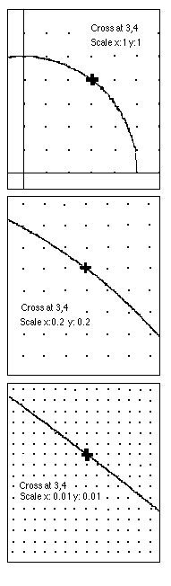

On the right, going down, we zoom in on the curve y = x2 at the point (1,1).
The second graph shows the same curve, again centered at (1,1), but the scale is X: 0.2, Y: 0.2 .
The third graph ends up 0.02 of a unit apart. Notice what happens. In this small portion
of the graph, the curve looks like a straight line. The slope of this line is essentially
the slope of the curve or the slope of the tangent to the curve at the point (1,1).
Using the dots on the screen, we can find the slope of this line, which is 2.
The slope of the tangent to the curve y = x2 at (1,1) is 2.
Zoom in on other points like (2,4) and (3,9), and make a table like
this:
x-coordinate slope of tangent
1
2
2
3
Find a rule for these pairs of numbers. Whatever you
get will be the derivative of x2.

On the right we zoom in on the circle x2 + y2 = 25 at the point (3,4).
Look at the third graph on the right. What's the slope of this 'line'? It looks like -3/4. The point was (3,4). What do you notice?
What would you predict would be the slope of the tangent to the circle at the point (4,3)? at (0,5)? Wow!
Suppose you don't have a computer to "zoom in" on the curve x2, can you do this? SURE!
Zoom in on other points like (1,2) and (2,4), and some others, and make a
table like this:
x-coordinate slope of tangent
1
2
3
6
Find a rule for these pairs of numbers.
7.
Derivatives as done in most textbooks..not done here.
8.
Tickertape -- application of the derivative..not done here.
9.
Now let's find the slope of the tangent to the curve y = x3 ...not done here.
10. Rectangles of
constant perimeter of 20